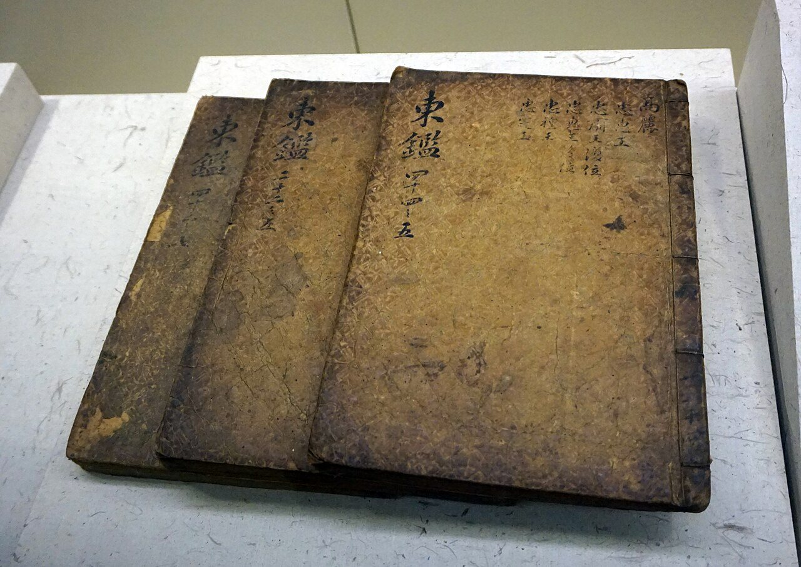
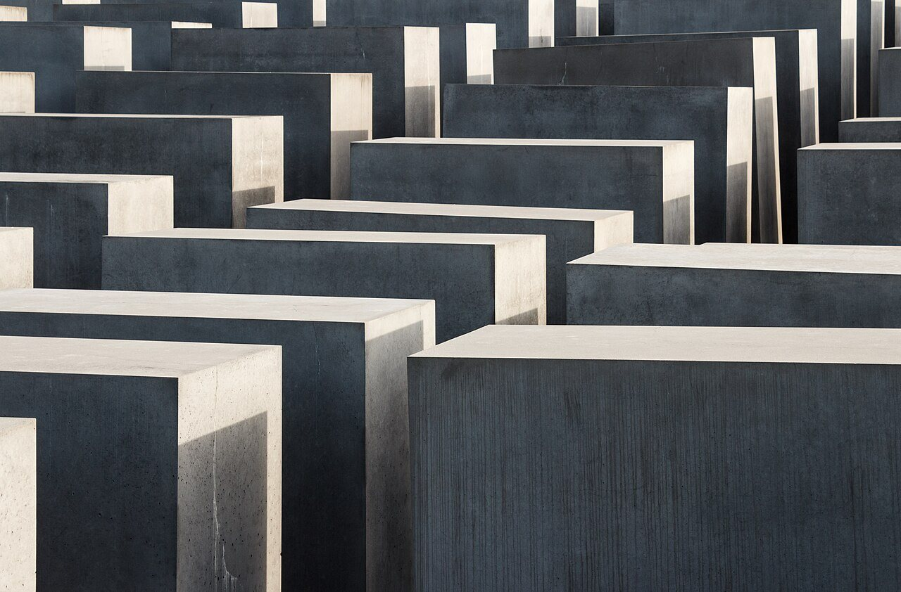
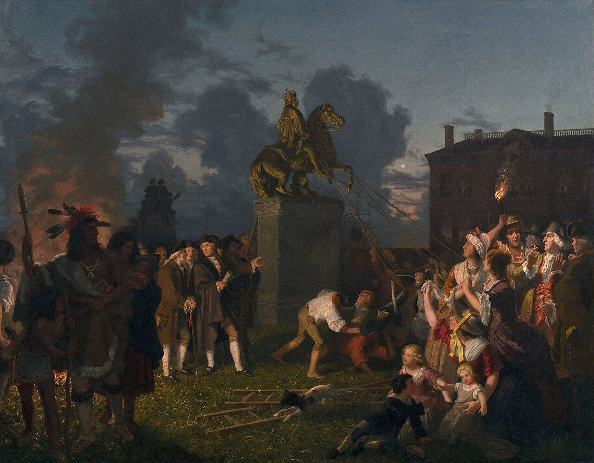

사진 · 『동국통감』
중학교 역사① · 1단원 역사 학습의 기초
거울역사는 왜 배우는가
『동국통감』 · 사진 三猎 · CC BY-SA 4.0
“지나간 일을
지나간 일을
왜 배울까?
사실내 이름에 담긴 이야기
해석기억을 잃으면 무엇을 잃을까
확장우리 모두의 기억은 누가 지킬까
나는 누구?
기억이 없다면 대답할 수 있을까?
나어디에서 왔나
판단어떻게 할까
남왜 그랬을까

사진 · 베를린 기념비
왜 수도 한가운데
이것을 세웠을까?
사실베를린, 기둥 2,711개
해석무엇을 기억하려고
확장잊고 싶은 기억도 지켜야 할까
학살된 유럽 유대인을 위한 기념비, 베를린 · 사진 Slaunger · CC BY-SA 3.0

그림 · 조지 3세 동상 끌어내리기
동상기억은 바뀔 수 있을까?
요하네스 오어텔, 「조지 3세 동상 끌어내리기」(1850년대) · 퍼블릭 도메인
역사를 배우면
미래를 맞힐 수 있을까?
사실똑같은 일은 다시 일어나지 않는다
해석그런데 비슷한 일은?
확장‘이번에는 무엇이 다를까’
기념일달력
박물관전시
교과서교실
혁명 ↔ 반란
같은 일을 누가, 어떻게 기억할까?
2126
100년 뒤 교과서에
오늘은 어떻게 쓰일까?
그 한 줄에 우리는 들어갈까?
나의 질문
올해 역사 시간에 답을 찾고 싶은 것 하나
“역사를 배우는 까닭은 이다.